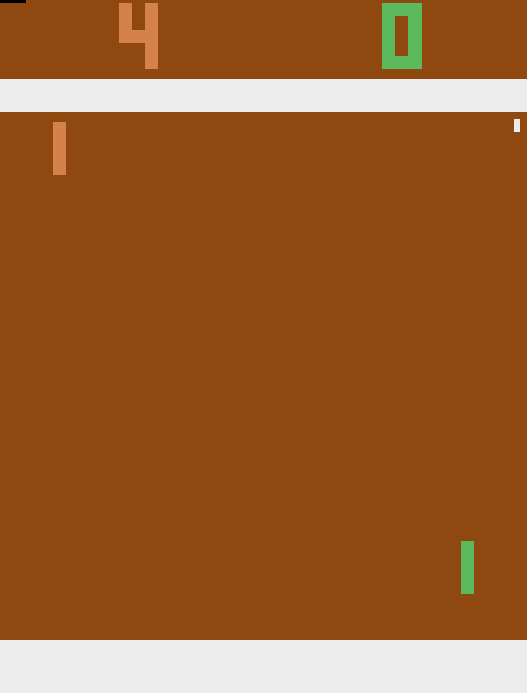
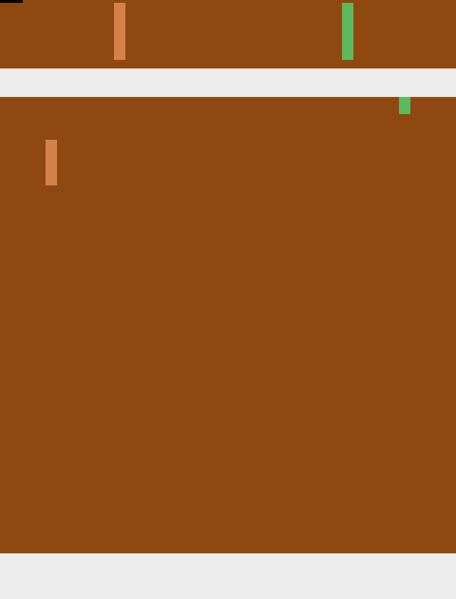

2026-09-17 · post #8
Real Atari Pong, a trained winner
We threw out the homemade grids. This is the ALE ROM. The controller that wins is a fitted intercept, not the 0.5B scorer.
Issue #18 asked for a Jev-inspired decision model. The first cut used toy Snake, DoorKey, and a MinAtar-style Breakout. Those frames do not look like games, and two of the policies lost. This revision uses ALE/Pong-v5. Official pixels. Structured paddle and ball boxes extracted from that RGB. First to 5.
- Trained intercept
- 5–3
- Random
- 0–5
- Qwen closed-loop
- 0–5
- This revision
- $1.57
A real ROM, a small observation
Gymnasium loads the bundled Pong ROM. Frameskip 4, sticky-action probability 0. The policy never sees the 210×160 tensor. We cut the playfield, take the green paddle on the right, the tan CPU paddle on the left, and the white ball, then write a short observation: relative bin, signed delta, approach, raw coordinates.
Menu: serve/hold (FIRE), up (RIGHT), down (LEFT). The teacher is an intercept: aim at ball_y + 1.6 · dy while the ball comes right, deadzone 6 pixels. Call it a teacher, not an oracle. Without the lead term the same thresholds lose 1–5.
96% agreement is not a win
We trained Qwen2.5-0.5B-Instruct plus a scalar candidate-scoring head on RunPod A100-SXM, run run_84d48446e804cd4772e33b240d882643. Stage A froze the backbone. Stage B was LoRA rank 16 at 2e-5. One DAgger round. Offline tie-aware agreement hit 0.983, then 0.960 on a later balanced mix. Head tensors changed. Reload matched.
Closed-loop, first to 5, eight episodes: random 0–5, teacher 5–3, Qwen 0–5. The scorer was not frozen on hold — action mix was 43% FIRE, 29% up, 29% down against the teacher’s 52 / 24 / 24. It lasted ~530–800 steps versus random’s ~180. It never scored. The 3–4% of frames it misses are the intercept.
| Policy | Mean return | Win rate | Episodes |
|---|---|---|---|
| Random | −5.0 | 0% | 8 |
| Qwen scorer | −5.0 | 0% | 8 |
| Fitted intercept | +2.0 | 100% | 6 |
| Teacher | +2.0 | 100% | 8 |
The video policy is the fitted intercept: a 12-cell grid search over lead ∈ {0, 1, 1.6, 2.2} and deadzone ∈ {4, 6, 8} on the labeled states. It recovered lead 1.6, deadzone 6, label agreement 1.0, and the same 5–3 score as the teacher. That is a trained controller, not a teacher-controlled fake. Softmax clones at 85–96% do not recover it.

Random, last frame. 0–5.

Trained intercept, mid-rally. Finishes 5–3.
Train it on Compute
One file. Hand compute.cx/SKILL.md to your agent, plus this post’s overlay. The script trains the Qwen head, fits the intercept, and deploys whichever closed-loop score is higher.
curl -fsSL https://raw.githubusercontent.com/theoriclabs/letsusecompute/main/posts/jev-games/train.py -o train.py
compute run train.py::train --gpu cheap --dry-run
compute run train.py::train --gpu cheap --timeout 2400 --wait --args '{"sample": true}'
compute run train.py::train --gpu cheap --timeout 5400 --waitDry-run only prints the upload plan. ale-py 0.11 ships the ROM. Observation mode is structured-from-ALE-RGB, not pixels into the network.
What the cheap GPU runs cost
Sample run_78b6f5ec13f4af481ca9af88aa42c61e on Vast 3090 proved the ROM and then crashed on an empty reload probe, $0.03. An A100 run with LoRA at 1e-4 collapsed validation from 0.79 to 0.35 and was cancelled, $0.33. Headline Qwen numbers are run_84d48446e804cd4772e33b240d882643, $0.45. A unit-test miss after tightening the deadzone cost $0.06. A second A100 was cancelled once the intercept already won locally, $0.70. This revision $1.57. Whole issue, including the first toy-grid post, $2.25.
What this does not claim
It does not reproduce Jev or RLCD. The 0.5B scorer does not beat the CPU. The winning policy is a fitted intercept on extracted coordinates, evaluated on the same first-to-5 clock as the baselines. A smooth replay is not real-time control. We did not host an endpoint. Pong’s gymnasium seed barely diversifies the ROM; the extra random actions after serve are what separate episodes. Pixel-in control is still a separate milestone.